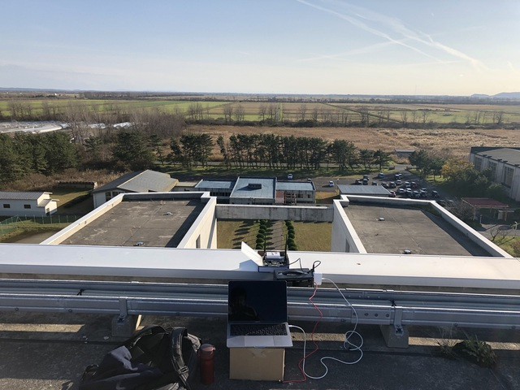
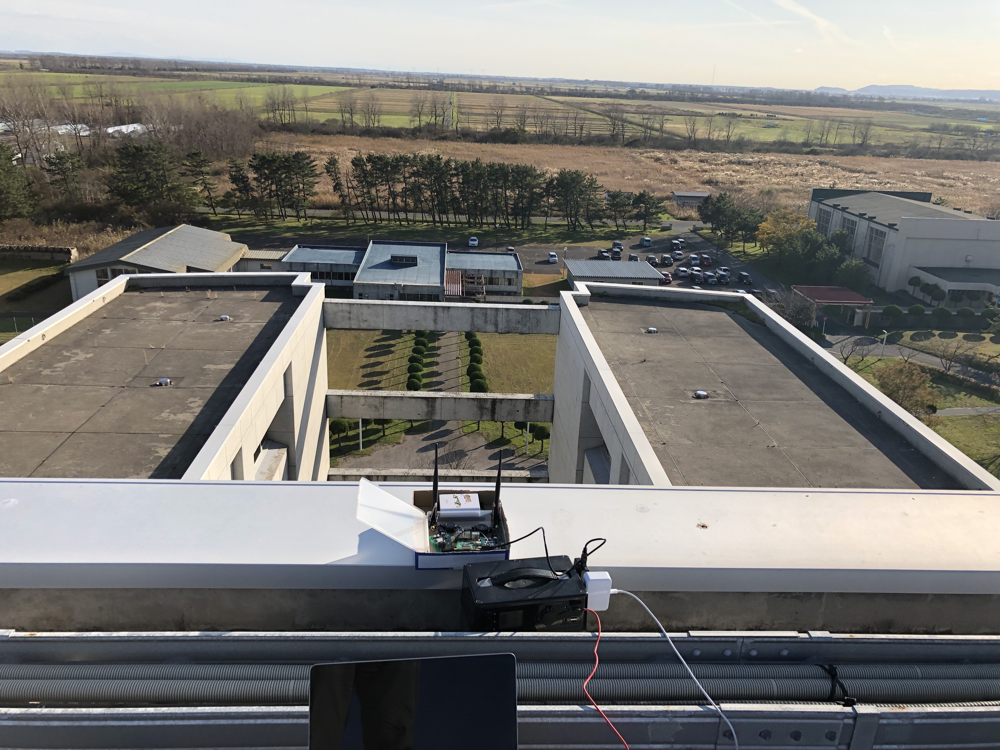
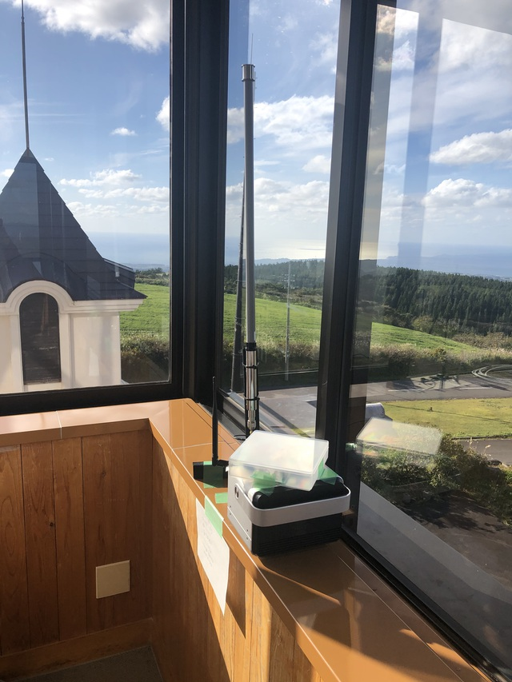

研究内容
大規模 IoT データ収集・管理・分析技術に関する研究
膨大の数の IoT 端末それぞれからサイズの小さいデータを収集するための無線技術として、LPWA(Low-Power Wide-Area)無線技術が注目されています。本研究では、LPWA無線を用いてセンサー情報などを収集する方式やシステムに関して研究します。
また，IoTシステムによって収集されるデータを活用するためには、データから意味を見出すデータ分析技術が必要です。さらに、これらの膨大な量のデータを効率よく分析するためには、データ管理のためのアルゴリズムが必要になります。本研究では、大規模IoTシステムを対象に、膨大な量のデータを効率的に分析・管理するための技術に関して研究します．

大潟村での LoRa 無線測定の様子



にかほ市ひばり荘での LoRa 無線中継実験の様子

自律分散型ネットワーク可用性向上に関する研究
IoT時代には、自動車の位置や信号機の状態などの交通情報や、遠隔医療のための映像情報といった我々の生活を支える実社会に関わる情報が、ネットワークを通じてやり取りされます。そのため、ネットワークには従来と比べ、より高い可用性(高い稼働率)が求められます。そこで本研究では、自律分散型で動作する IPネットワークの可用性向上技術である IP 高速迂回について研究します。IP 高速迂回では、リンク故障を検知したルータが転送経路を即座に別リンクに切り替えることで、パケット転送の中断時間を短縮します。